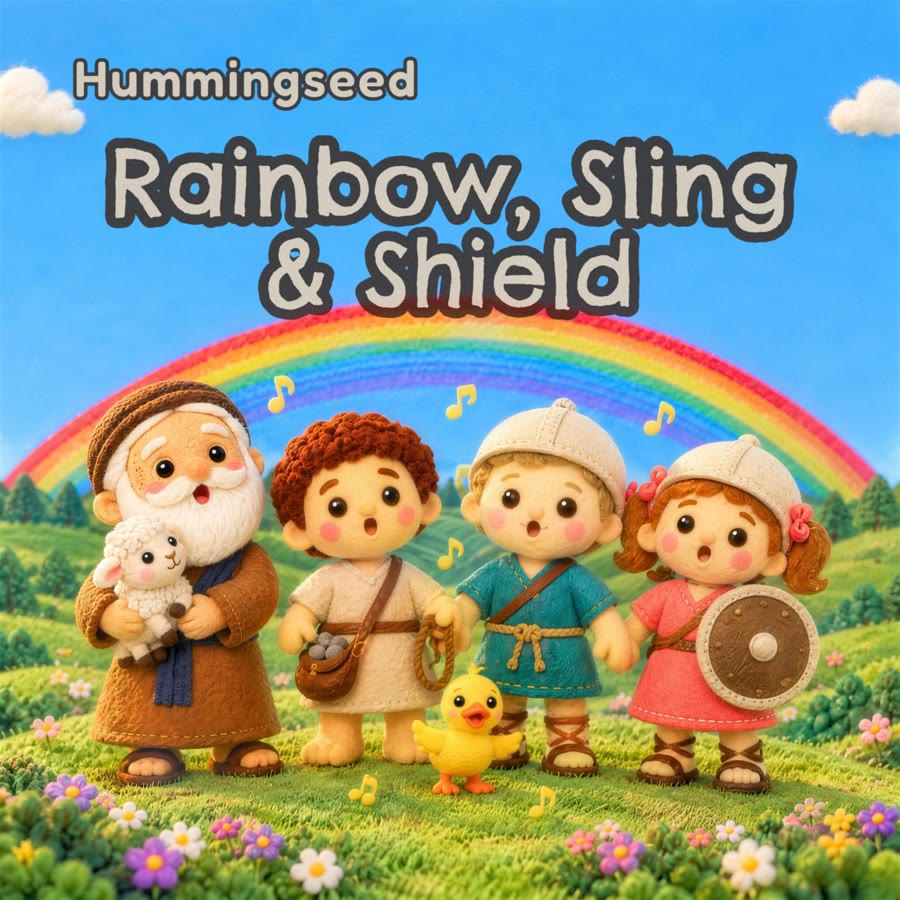

시작
성경 이야기를 동요로
8월에는 AI로 가상 인플루언서를 만드는 실험(지난 로그 느좋 파이프라인)과 이 일을 나란히 준비했다. 인플루언서 쪽은 이야기와 분위기를 전부 처음부터 지어내야 해서 어려웠고, 8월 말에 접었다. 성경에는 오래 전해 온 이야기가 이미 있다. 그래서 이쪽만 남겼다.
대상은 영어권의 3~8세 아이들, 그리고 아이와 함께 부를 노래를 찾는 부모와 교사다. 노래 한 곡에 노아의 방주나 다윗과 골리앗 같은 이야기 하나를 담고, 화면에 가사를 띄운다.
둘이 한다. 음악은 뮤지션 친구가, 가사와 영상은 내가 맡는다. 둘 다 AI를 많이 쓴다. 가사는 9월 초까지 36곡 치를 먼저 써 뒀다.
유튜브
유튜브에 공개한 네 편
영상은 유튜브 채널 Hummingseed에 올린다. 흥얼거림(hum)과 씨앗(seed)을 붙여 지은 이름이다. 9월 29일에 첫 두 편을 공개했고, 지금은 네 편이 공개돼 있다. 다 만든 두 편은 비공개로 올려 두고 공개할 날을 기다린다.
아이들이 보는 영상이라 채널 전체를 유튜브의 '아동용'으로 설정해 댓글과 맞춤 광고를 껐다. AI로 만들었다는 표시도 붙였다. 설명란마다 바탕이 된 성경 구절을 적고, 어디까지 AI가 했고 어디부터 사람이 했는지도 적는다.
숫자는 아직 작다. 구독자는 18명이고, 네 편의 조회수를 다 합쳐 180회쯤이다. 광고 수익도 아직 없다.
제작
노래 한 곡이 영상이 되기까지
- 가사 — 내가 AI와 함께 쓰고, 다른 AI에게 검토를 받아 고친다.
- 음악 — 친구가 AI로 멜로디와 노래하는 목소리를 만들고, 손봐서 완성한다. 첫 음반의 세 곡은 반주를 악기로 직접 연주해 다시 녹음했다.
- 장면 그림 — 이야기를 장면으로 나누고, 장면마다 펠트 인형 그림을 AI로 그린다.
- 영상 — 그림 한 장 한 장을 AI로 짧게 움직여 이어 붙인다.
- 자막과 업로드 — 노래에 맞춰 가사를 띄우고 유튜브에 올린다.
비싼 영상은 맨 나중에. 처음 세 곡, 특히 첫 곡에 돈이 많이 들었다. 9월 말에 따져 보니 AI 영상에 쓴 돈 가운데 완성본에 실제로 쓰인 건 3.4%뿐이었고, 나머지는 버린 영상 값이었다. 영상을 끝까지 만들어 놓고서야 확인했고, 그때 그림체나 방향을 바꾸면 전부 새로 만들었기 때문이다. 지금은 장면 그림을 노래에 맞춰 먼저 넘겨 보며 이야기가 잘 읽히는지 확인하고, 그다음에 영상을 만든다.
중간 확인은 AI에게, 마지막 선택은 사람이. 이런 중간 확인도 처음엔 내가 했다. AI가 단계마다 "이걸로 갈까요?" 하고 내 답을 기다렸다. 그런데 세어 보니 곡 네 개를 만드는 동안 서른 번쯤 물어 왔고, 내가 AI의 첫 제안과 다르게 고른 건 한 번뿐이었다. 그래서 중간 확인은 다른 AI에게 맡기고, 노래 파일만 넘기면 AI가 영상 초안까지 이어서 만들게 바꿨다. 나는 마지막에 보고, 우리가 고른 영상만 채널에 올린다.
이야기는 단순하게. 말하는 나귀 이야기처럼 동작이 어려운 장면이 많으면, 영상 속 움직임이 자꾸 어색하고 어지럽게 나온다.
무조건 시나리오는 간단하게 … 너무 복잡한 장면을 만들면 전달도 잘 안되고 영상으로 만들기도 어려움— 작업하며 내가 남긴 말, 10.03
음원·저작권
음원 발매와 저작권 등록
노래는 영상과 따로 음원으로도 낸다.
스트리밍 — DistroKid
DistroKid는 개인 음악가가 여러 스트리밍 서비스에 곡을 한 번에 올릴 수 있게 해 주는 유통 서비스다. 9월 29일, 노아의 무지개·다윗과 골리앗·하나님의 갑옷 세 곡을 묶어 첫 음반 Rainbow, Sling & Shield를 냈다. 제목은 노아의 무지개, 다윗의 물매(돌팔매), 갑옷 노래의 방패에서 따왔다. 지금 Spotify, Apple Music, YouTube Music에서 들을 수 있다.

저작권 — 한국음악저작권협회
국내에서 노래가 쓰이면 작사·작곡가에게 저작권료가 돌아간다. 이 돈은 주로 한국음악저작권협회가 걷어서 나눠 준다. 받으려면 협회에 가입해 저작권 관리를 맡기고, 곡을 하나씩 등록해야 한다. 9월 29일, 협회 가입을 신청하면서 세 곡의 등록 서류도 함께 냈다.
다음
다음 로그에는 채널이 어디까지 갔는지 적을 생각이다.